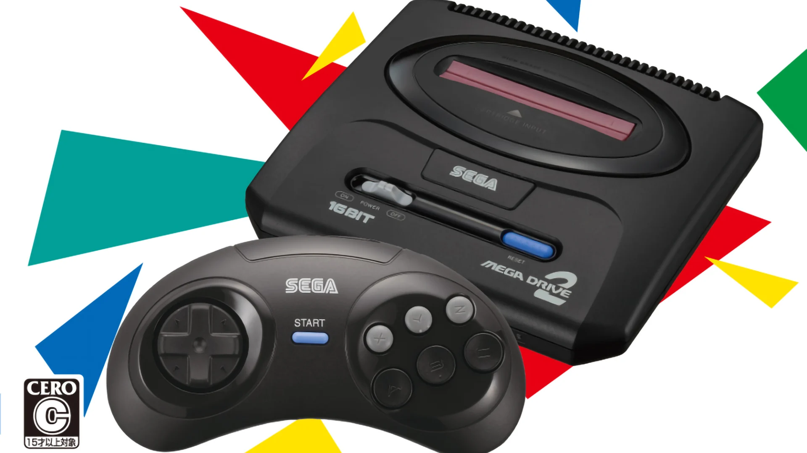
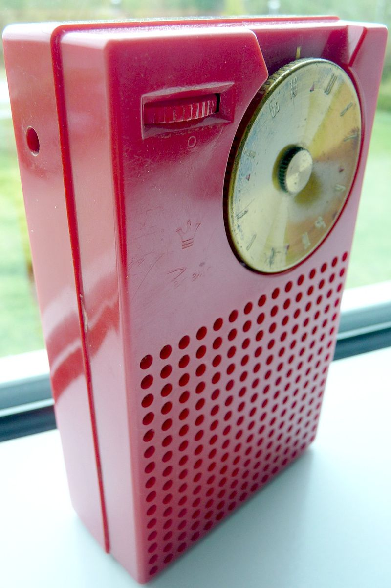
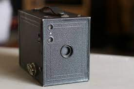

-

IMac G3
1998
Первая ревизия iMac G3 включала 15-дюймовый (13,8-дюймовый видимый) ЭЛТ-дисплей, процессор 233 МГц, графику ATI Rage IIc, жесткий диск объемом 4 ГБ, дисковод CD-ROM с загрузкой в лоток, два порта USB, модем 56 Кбит/с, встроенный Ethernet,
-

Sega mega drive mini
1954
Приставка была разработана исследовательской группой под руководством Хидэки Сато и Масами Исикавы на основе аппаратного обеспечения аркадного автомата Sega System 16. В качестве первичного центрального процессора был выбран Motorola 68000, вторичным стал Zilog Z80. На данную игровую систему было разработано более 900 игр, в создании которых принимала участие как сама компания Sega, так и сторонние издатели; игры распространялись на игровых картриджах. Sega Genesis имеет обратную совместимость с Sega Master System, которая достигается путём использования устройства Power Base Converter, продававшегося отдельно. Для консоли были разработаны и другие периферийные и сетевые устройства. В это же время и сама консоль выпускалась в различных вариациях, которые были направлены на расширение функциональности.
-

Regency TR 1
1954
Первый в мире серийный полностью транзисторный радиоприёмник, поступивший в широкую продажу. Появился в магазинах в США 1 ноября 1954 года. TR-1 был спроектирован совместно компаниями Texas Instruments и IDEA. Руководство Texas Instruments предполагало, что экономичный карманный приёмник способен стать катализатором массового спроса на транзисторные устройства, создав устойчивый рынок для основного продукта компании. Планы были реализованы лишь отчасти — за первый год выпуска удалось продать около ста тысяч приёмников.
-

Morse Scanner
1857
Азбука морзе....
-

Kodak Brownie
1900
Название семейства дешёвых фотоаппаратов простейшего типа, выпускавшихся компанией Eastman Kodak в течение нескольких десятилетий, начиная с 1900 года. Первая модель линейки стоила всего 1 доллар и была самой дешёвой и доступной камерой своего времени.Название «Брауни» позаимствовано у известных персонажей комиксов Палмера Кокса, поскольку фотоаппарат первоначально предназначался для детей